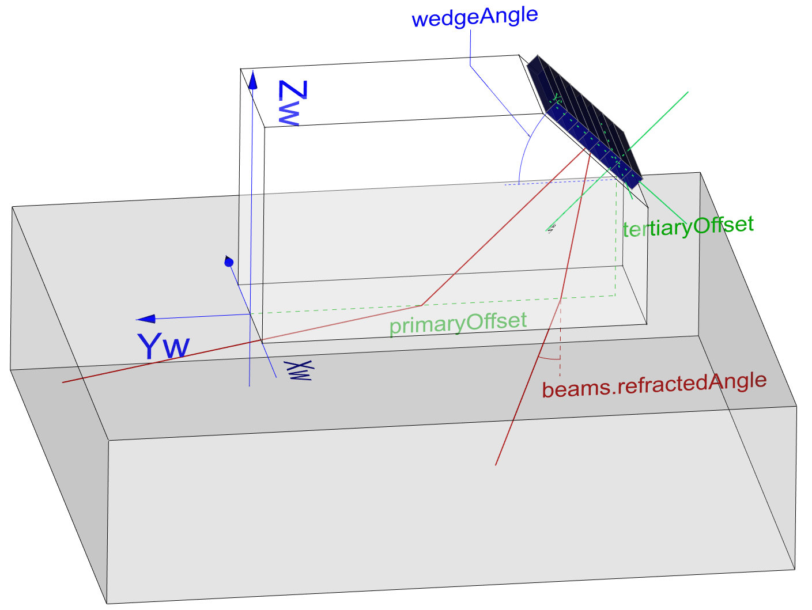
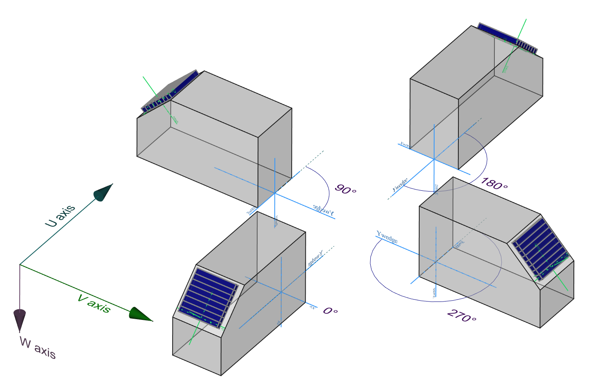

Conventions¶
Units¶
Angles are expressed in degrees, while all other units in the dataset use the International System (SI), such as meters and seconds, unless otherwise indicated by a "unit" key. For example, the "Bitfield" and "Percent" units are used for the A-scan in the dataset object.
| Quantity | Symbol, usual script (common) | Units |
|---|---|---|
| Distance, positions | X, Y, Z | meter [m] |
| Time | t | second [s] |
| Mass | M | kilogram [kg] |
| Speed | c | [m/s] |
| Angle | α, β, γ, θ, φ | degree [°] |
| Density | ρ | [kg/m3] |
| Gain | G | dB |
| Attenuation | A | dB |
| Fractional Bandwidth | FBW | % |
Axes and Coordinate System¶
About scenarios¶
The relationship between objects in the .nde file (specimen, probe, wedge, encoder) is defined by inspection scenarios.
\((U,V,W)\); surface coordinates and depth¶
For scenarios in which probe positioning is in direct relation to the surface, the position on the surface of a specimen, \((X, Y, Z)\) in global coordinates, is transformed into \((U,V)\) surface orthogonal curvilinear coordinates. Take note that depending on the scenario, the \((U,V)\) may be directly in distance unit (meter), but this is not systematic.
The use of \((U,V)\) coordinates is enforced as a way to disambiguate the notions of “scan axis” and “index axis,” which are interpreted depending on the scenario.
To the \((U,V)\) surface mapping coordinates a depth axis \(W\) is added. The depth \(W\) is defined as being normal to the local \((U,V)\) coordinates and follows the right-hand rule for sign definition, resulting in a \((U,V,W)\) coordinate system
-
The \(W\) axis is normal to the surface and always points inside the material.
-
The \(U\) axis is defined relative to the specimen's feature (per scenario). Its orientation is arbitrary.
-
The \(V\) axis is perpendicular to \(U\) and its orientation can be infered with the right-hand rule from the cross product of \(U\) and \(W\).
Other coodinate systems¶
- \((X,Y,Z)\): Global referential axis.
- It is independent of the acquisition and serves to position the data on the specimen in the real world.
- Origin and orientation: Arbitrary and stays the same across files for a given specimen. It is usually defined by the user on the specimen with some marking or physical reference in the specimen environment.
NOTE: Currently, the \(X\), \(Y\), and \(Z\) axis are not used nor defined in the NDE file, but to show inspection results in 3D, one would have to translate everything to this coordinate system.
-
\((X_w, Y_w, Z_w)\): Wedge coordinate system.
- Note that the term wedge is used to describe all devices that maintain constant positioning of a probe relative to an inspected surface.
- The wedge is typically positionned directly on the surface \((U,V)\) and thus link the probe position to the part.
- Origin and orientation: See appropriate wedge object conventions with the appropriate technology (ex. UT/PAUT) for details.
-
\((U_e, V_e)\): The probe elements coordinate system
- On the probe surface (i.e. they are surface coordinates)
-
Origin and orientation: See appropriate probe object conventions with the appropriate technology (ex. UT/PAUT) for details.
-
Beams Axis:
- An axis used in the HDF5 dataset rather than a physical one where each element contains one beam's positions and parameters. It is used in PAUT scenarios when the beams do not fit well in a \(U\), \(V\) grid. Giving the coordinate by beams simplifies their use in these scenarios.
-
Ultrasound Axis:
- Time-based information sampled by an ultrasonic acquisition system. The positioning in the global coordinates requires accounting for ray tracing and part velocities.
-
Encoding Axes:
- Relates to encoder displacement, coupling to specimen and/or global coordinates is scenario dependant.
Data mapping versus the specimen (dataEncoding) conventions¶
General Concepts¶
Independantly of the non-destructive evaluation method, there's always a need to relate acquisition data to the inspected specimen in terms of positionning. There exist, however, diametrically opposed use case calling for adapted methods to achieve this relationship. For example, most PAUT weld inspection with scanners will relate the data positionning relative to the surface itself with a constant resolution. On the other hand, one could acquire and store phased array acquisition with a 6 axis robot and use complex post-processing methods to achieve inspection data positionning. The dataEncoding object class specify how inspection data relates to the specimen.
DiscreteGrid object¶
With discreteGrid the relationship between data and the specimen is directly made through the scenario coordinate system (for example \((U,V)\) in the explanations below). Pratically, this is done by adding dimensions to the dataset corresponding to each of the scenario coordinate system axis.
- Hypothesis:
- Only one dataset of a given type, for a given group, is saved at each of the scenario coordinates.
storagemode.¶
There are two disctinct ways to work with discreteGrid when storing a given dataset.
storageMode:"Independent" is used to store the complete data acquisition sequence in reference to a \((U,V)\) positionning corresponding to a global acquisition device positionning. For example, a scanner comprizing many different PAUT probes each individually offset relative to the \((U,V)\) reference system could all relate to the same discreteGrid with independant storage mode. In this case the positionning of the data on or in the specimen requires some processing of individual beams or sensors position.
storageMode:"Paintbrush" is used to store individual beam or sensor information directly on the corresponding \((U,V)\) position. Practically, Paintbrush is only possible under some hypothesis: - All beams or sensors operates under the same condition. For example, paint brush is possible with linear PE PAUT but is not with sectorial PE PAUT. - All beams or sensors can be associated with a surface position. For example, FMC acquisition can't be stored as Paintbrush because individual ascan of the FMC don't have defined surface positionning. - Beams or sensors surface positionning should fit perfectly on the underlying coordinate system grid. Accordingly, the discreteGrid coordinate system grid typically has to be created according to a probe and scanning system characteristic for a Painbrush storage.
The obvious advantage of Paintbrush storage is that it natively is mapped on a specimen surface.
FullCycle object¶
In this case, all acquisition cycles are kept and so are the corresponding positionning from all available positionning devices.
UT/PAUT Conventions¶
General Concepts and Hypothesis¶
- Material is considered homogeneous and isotropic by default.
- Coupling layers are incapable of transmitting shear wave by default.
- Probe with unique resonant frequency by default.
UT/PAUT Wedge Conventions¶
angleBeamWedge object¶
-
Hypothesis:
- Wedge body and contact surface are considered symmetrical.
- The wedge contact surface (with the specimen) is flat or curved with a single radius of curvature.
- The probe(s) surface contact is flat.
- The positionning of the first element on a given wedge is standardized (by design of the probe/wedge assembly).
-
The wedge coordinate system origin is centered at the bottom of its front face (blue axis system in the figure below).
|  |
|---|
| Flat wedge parameters and referential system examples. |
-
The wedge coordinate system orientation is defined such as to have the \((Y_w)\) axis aligned with the wedge length; the \((X_w)\) axis aligned with the wedge width and the \((Z_w)\) axis aligned with the wedge height
-
The wedge skew angle is defined by the angle between the wedge and U axis on the surface of the part at the wedge origin.
|  |
|---|
| Isometric views of different skew angles for reference. The skew angle is taken from the U-axis to the wedge Yw-axis. |
-
Its positioning on the specimen is given in relation to the \((U,V)\) coordinates with the uCoordinateOffset and vCoordinateOffset located in the domain setup at wedges[x].positioning.
-
The positioning of the probe \((U_e, V_e)\) coordinate system is achieved in the \((X_w,Y_w,Z_w)\) coordinates through the successive application of the primaryOffset (on the \((Y_w)\) axis), the secondaryOffset (on the \((X_w)\) axis) and the tertiaryOffset (on the \((Z_w)\) axis). The origin of the probe coordinate system is the center of the first probe element.
- The orientation of the probe \((U_e, V_e)\) coordinate system is achieved in the \((X_w,Y_w,Z_w)\) coordinates through the successive application of the wedgeAngle, squintAngle, and roofAngle.
Flat wedges¶
- For flat wedges, the application of the above rules is straightforward as there's no ambiguity for the definition of the probe positioning.
Curved Wedge¶
-
The application of a wedge on a tubular component typically involves the use of a wedge with a matching curved surface. Such wedges require additional conventions.
-
Typical configurations are axial outer diameter (AOD) or circumferential outer diameter (COD). Note that a skew angle for outer or inner diameter inspection is also possible in this definition.
-
The curved wedge face is handled by redefining the tertiary offset and by defining the actual wedge curvature in the wedge object. The tertiary offset is defined for a flat wedge that is machined to the desired curvature.
mountingLocations Concepts and definition¶
- A probe is maintained in position on a wedge through an interface face defined by the aforementionned primaryOffset, secondaryOffset and tertiaryOffset plus three angles:
- wedgeAngle \(\beta\) : Angle between the normal of the interface face vs the \(Z_w\) Axis
- squintAngle \(\alpha\) : Angle between the projection of the probe primary axis on the \(X_w\)/\(Y_w\) plane and the \(Y_w\) axis.
- Note : default squint angle is 0 deg
- roofAngle \(\gamma\) : Rotation angle around the probe primary axis
- Note : default roof angle is 0 deg
 |
|---|
| Isometric view of the wedge reference system illustrating the positionning of the origin of the probe coordinate system (flat wedge example) |
- It is possible to have multiple probe mountingLocations defined on a single wedge, for example in the case of Dual Linear Array (DLA) or Dual Matrix Array (DMA) probes.
phasedArrayLinear objects¶
-
Hypothesis :
- Constant elementLength and elementGap for \((Np)\) elementQuantity distributed along a primary probe axis.
- Constant elementLength and elementGap for \((Ns)\) elementQuantity distributed along a secondary probe axis.
- Probe surface may be curved along the first or secondary probe axis but not both.
-
Specifically, the following use cases are covered:
- 1D linear array with flat active face.
- 1D linear array with curved active face along the primary axis (“CC” probes)
- 1D linear array with curved active face along the secondary axis (“CCEV” probes)
- 2D linear array with flat active face.
- 2D linear array with curved active face along the primary axis (“CC” probes)
- 2D linear array with curved active face along the secondary axis (“CCEV” probes)
Examples UT/PAUT¶
 |
|---|
| Example of a typical plate scenario with a weld and two probes in relation to the \(U\) and \(V\) axis. |
 |
|---|
| Example general weld scenario with an axial weld on a pipe. |